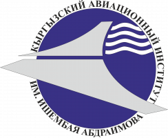

И. Абдраимов атындагы Кыргыз авиациялык институту
Кыргызский авиационный институт им. И. Абдраимова
РЕФЕРАТ
Дисциплина: Авиационное законодательство
Тема:
М. В. Ломоносов — великий учёный,
создатель первой аэродинамической машины
Выполнила: Жумабаева Амина Жээнбековна
Группа: СП-1-26
Проверил: Даирбеков Рахимбек Даирович
г. Бишкек 2026
СОДЕРЖАНИЕ
1. Введение
2. Михаил Васильевич Ломоносов
3. Интерес Ломоносова к воздухоплаванию
4. Создание аэродинамической машины
5. Устройство и принцип работы машины
6. Значение изобретения Ломоносова
7. Значение машины для развития авиации
8. Заключение
9. Список литературы
1. ВВЕДЕНИЕ
История авиации представляет собой длительный процесс развития
научных знаний, технических идей и инженерных решений. Стремление
человека подняться в воздух возникло задолго до появления
современных самолётов и вертолётов.
Для развития авиации большое значение имели исследования
физических свойств воздуха, движения тел и возникновения
подъёмной силы. Учёные разных эпох пытались понять, каким образом
можно использовать воздушную среду для перемещения и подъёма
различных конструкций.
Одним из выдающихся учёных, проявлявших интерес к изучению
атмосферы и движению воздуха, был Михаил Васильевич Ломоносов.
Он занимался физикой, химией, астрономией, географией,
метеорологией и другими научными направлениями.
Особый интерес для истории авиации представляет созданная
Ломоносовым аэродромическая, или воздухобежная, машина.
В 1754 году учёный представил её Академии наук. Конструкция
предназначалась прежде всего для подъёма небольших
метеорологических приборов в верхние слои атмосферы.
Цель данного реферата — рассмотреть научную деятельность
М. В. Ломоносова, историю создания его аэродинамической машины,
её устройство, принцип работы и значение для развития
научных представлений о полёте.
2. МИХАИЛ ВАСИЛЬЕВИЧ ЛОМОНОСОВ

Михаил Васильевич Ломоносов
Михаил Васильевич Ломоносов родился в 1711 году и стал одним
из наиболее известных русских учёных XVIII века. Его научные
интересы были чрезвычайно широкими. Он проводил исследования
в области физики, химии, астрономии, географии, минералогии
и естествознания.
Ломоносов большое значение придавал экспериментам. Он стремился
не только создавать теоретические объяснения различных явлений,
но и проверять их с помощью практических опытов и наблюдений.
Учёный проявлял большой интерес к атмосфере и физическим
свойствам воздуха. Он понимал, что для полноценного изучения
атмосферы необходимо получать сведения на разных высотах.
Именно поэтому Ломоносов предложил использовать специальную
механическую конструкцию, которая могла бы поднимать небольшие
измерительные приборы. Эта идея стала одним из интересных
примеров ранних исследований вертикального движения
летательных конструкций.
3. ИНТЕРЕС ЛОМОНОСОВА К ВОЗДУХОПЛАВАНИЮ
В XVIII веке современного самолёта ещё не существовало.
Не было авиационных двигателей, лёгких металлических конструкций,
современных систем управления и других технологий.
Поэтому первые исследования возможности полёта были связаны
прежде всего с физикой. Учёные изучали движение воздуха,
поведение различных тел в воздушной среде и возможность
создания подъёмной силы.
Ломоносов также интересовался возможностью механического
воздействия на воздух. Он предложил конструкцию, в которой
движущиеся крылья должны были взаимодействовать с воздушной
средой и создавать силу, направленную вверх.
Основной целью изобретения было не создание пассажирского
летательного аппарата. Машина предназначалась для подъёма
небольших научных приборов, которые могли использоваться
при изучении атмосферы.
Историческая справка
В 1754 году Ломоносов представил Академии наук
свою аэродромическую машину. В исторических материалах
она также называется воздухобежной машиной.
Таким образом, интерес Ломоносова к воздухоплаванию был связан
не только с идеей полёта, но и с конкретными научными задачами.
4. СОЗДАНИЕ АЭРОДИНАМИЧЕСКОЙ МАШИНЫ

Реконструкция аэродромической машины М. В. Ломоносова
В 1754 году Михаил Васильевич Ломоносов представил
аэродромическую машину. Её основной задачей было поднятие
небольших метеорологических приборов в верхние слои атмосферы.
Конструкция была небольшой и предназначалась для научных
экспериментов. Она не была самолётом в современном смысле,
поскольку не имела двигателя, кабины пилота и системы управления,
характерных для современных воздушных судов.
Машина имела две пары движущихся крыльев. Для приведения
механизма в действие использовалась пружина, похожая
на механизм часовых устройств.
При работе механизма крылья двигались и воздействовали
на окружающий воздух. Благодаря этому возникала сила,
направленная вверх, что позволяло конструкции подниматься.
Таким образом, Ломоносов применил механический принцип
движения крыльев для решения конкретной научной задачи.
5. УСТРОЙСТВО И ПРИНЦИП РАБОТЫ МАШИНЫ
Основным источником энергии аэродинамической машины являлась
пружина. При её заведении запасённая механическая энергия
передавалась механизму, который приводил в движение крылья.
Движение крыльев должно было воздействовать на воздушную среду.
Воздух отбрасывался вниз, а конструкция получала направленную
вверх силу.
Принцип действия машины
Пружинный механизм
↓
Движение крыльев
↓
Воздействие на воздух
↓
Возникновение подъёмной силы
↓
Подъём конструкции
Необходимо отметить, что точный оригинальный чертёж машины
до наших дней не сохранился. Поэтому современные изображения
конструкции являются реконструкциями, выполненными на основе
исторических описаний.
Несмотря на простоту устройства, идея представляла интерес
для своего времени. Она показывала возможность применения
механического движения для создания вертикальной силы.
6. ЗНАЧЕНИЕ ИЗОБРЕТЕНИЯ ЛОМОНОСОВА
Аэродинамическая машина Ломоносова представляет интерес
как один из ранних примеров инженерной конструкции,
предназначенной для движения в воздушной среде.
Главной целью машины было проведение научных исследований.
С её помощью предполагалось поднимать измерительные приборы,
в том числе термометры, для получения информации о состоянии
воздуха на высоте.
Важность этой работы заключается в соединении науки
и технического эксперимента. Ломоносов не ограничился
теоретическими рассуждениями, а предложил реальную
механическую конструкцию.
Машина также интересна с точки зрения истории винтокрылых
летательных аппаратов. В её основе находилась идея создания
подъёмной силы при помощи движущихся элементов,
взаимодействующих с воздухом.
Хотя возможности машины были ограниченными, её создание
демонстрирует раннюю попытку использовать знания физики
для решения инженерной задачи.
7. ЗНАЧЕНИЕ МАШИНЫ ДЛЯ РАЗВИТИЯ АВИАЦИИ
Современная авиация является результатом многовекового
развития науки и техники. До появления первых самолётов
учёные и изобретатели проводили многочисленные эксперименты,
изучая свойства воздуха и движение летательных конструкций.
Аэродинамическая машина Ломоносова является одним из примеров
таких ранних исследований. Она показывает, что уже в XVIII веке
существовали попытки использовать механическое движение
для создания подъёмной силы.
Большое значение имела и научная задача, поставленная
перед машиной. Исследование атмосферы требовало получения
данных на разных высотах, а летательные конструкции могли
расширить возможности подобных наблюдений.
В дальнейшем развитие науки и техники привело к появлению
воздушных шаров, планеров, самолётов, вертолётов и других
летательных аппаратов. Современные воздушные суда значительно
отличаются от первых экспериментальных конструкций,
однако их развитие основывается на изучении физических законов.
Ранние научные эксперименты стали важной частью
формирования будущей авиационной науки.
8. ЗАКЛЮЧЕНИЕ
Михаил Васильевич Ломоносов вошёл в историю как выдающийся
учёный XVIII века. Его исследования охватывали множество
областей науки и способствовали развитию физики, химии,
астрономии, географии и естествознания.
Особое место в истории ранней авиационной техники занимает
его аэродромическая, или воздухобежная, машина. В 1754 году
Ломоносов представил конструкцию, предназначенную для подъёма
небольших метеорологических приборов в верхние слои атмосферы.
Машина приводилась в движение пружинным механизмом.
Движущиеся крылья взаимодействовали с воздухом и должны были
создавать силу, направленную вверх.
Данное изобретение нельзя называть современным самолётом
или вертолётом. Однако оно представляет исторический интерес
как ранняя экспериментальная конструкция, связанная
с исследованием вертикального движения в воздухе.
Работа Ломоносова показывает, что развитие авиации тесно
связано с развитием фундаментальных наук. Изучение воздуха,
механики и движения тел постепенно создало научную основу
для появления современных летательных аппаратов.
Таким образом, аэродинамическая машина Ломоносова является
важной частью истории научной мысли и ранних исследований
возможностей полёта.
9. СПИСОК ЛИТЕРАТУРЫ
-
Дузь П. Д.
История воздухоплавания и авиации в России.
-
Шавров В. Б.
История конструкций самолётов в СССР до 1938 года.
-
Материалы Российской академии наук
о научной деятельности М. В. Ломоносова.
-
Государственный каталог музейного фонда Российской Федерации.
Аэродинамическая модель Ломоносова.
-
Материалы по истории воздухоплавания,
аэродинамики и ранних летательных аппаратов.
Электронные источники
Wikimedia Commons — материалы о Михаиле Васильевиче Ломоносове
и его портретах.
Материалы по истории аэродромической машины Ломоносова.
РЕФЕРАТ ЗАВЕРШЁН